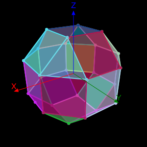
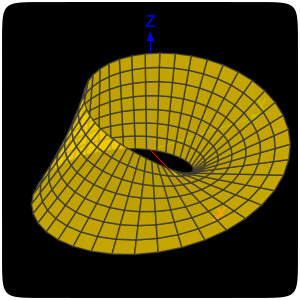
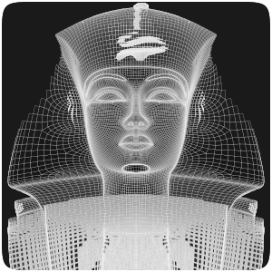
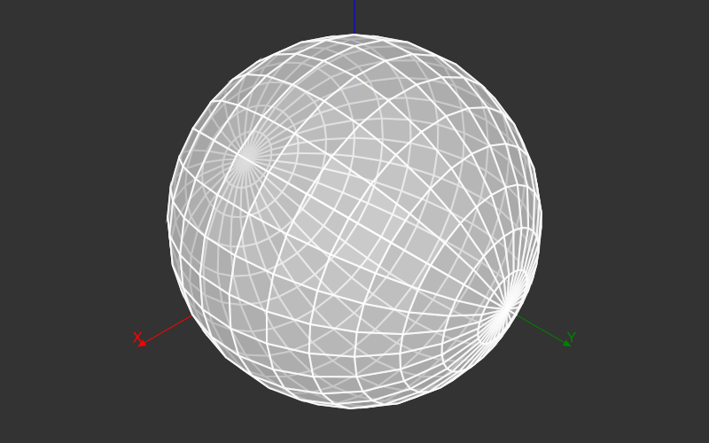

Simple 3D vector graphics
Thebes.jl is a little extension package to accompany the vector-graphics package Luxor.jl. It provides some rudimentary 3D wireframe functionality.

Project 3D points onto a drawng
Thebes projects points from the 3D world onto a 2D Luxor drawing. All the graphics are drawn using Luxor drawing functions.

Load object data in OFF format
Thebes.jl knows how to load some objects in the Object File Format (.OFF).
Introduction to Thebes
Thebes.jl is a small package that provides a few 3D wireframe tools for use with Luxor.jl, a simple 2D drawing package. You can define simple shapes in 3D, and have them projected onto a Luxor drawing.
Don't set your expectations too high! Thebes.jl merely generates a few simple 3D "wireframe" diagrams. For real 3D work, with solid shapes, lighting, textures, interactivity, and so on, use Makie.jl. Or spend a few months learning Blender...
Installation and basic usage
Install the package using the package manager at the REPL:
] add ThebesTo use Thebes, type:
using Thebes, LuxorA quick test:
using Thebesusing Luxor@drawsvg begin background("grey20") eyepoint(150, 150, 150) perspective(700) # read sphere data from a file include(dirname(dirname(pathof(Thebes))) * "/data/sphere.jl") # make a 3D object S = make(sphere, "a sphere") axes3D() # resize sphere from unit coordinates scaleby!(S, 150) setopacity(0.8) pin(S) # the "project into 2D" functionend 800 500
Documentation
This documentation was built using Documenter.jl.
Documentation built 2026-11-12T13:28:28.459 with Julia 1.13.3